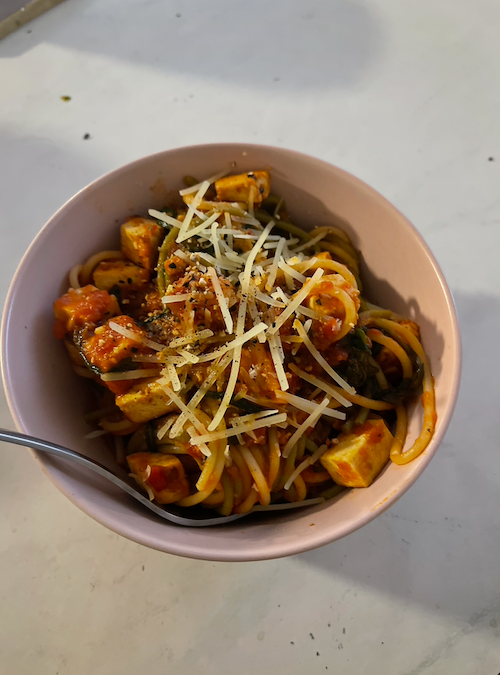

Sphagetti

Description
Yes, tofu sphagetti is a thing. It's a very delicious thing that you should make immediately.
Ingridients
- Marianara Sauce
- Sphagetti
- Tofu
- Garlic
- Olive oil
- Arugula
- Parmesan
Steps
- Boil water
- Take pasta in the boilng water for 8 minutes
- Minced garlic and then put garlic and tofu in olive oil
- Fry the tofu and garlic until it is crispy
- Combine the spaghetti and garlic and tofu with mariana sauce
- Mix with arugula while the sphagett is hot then put parmesan to your liking
- Bon Appetit!
Back